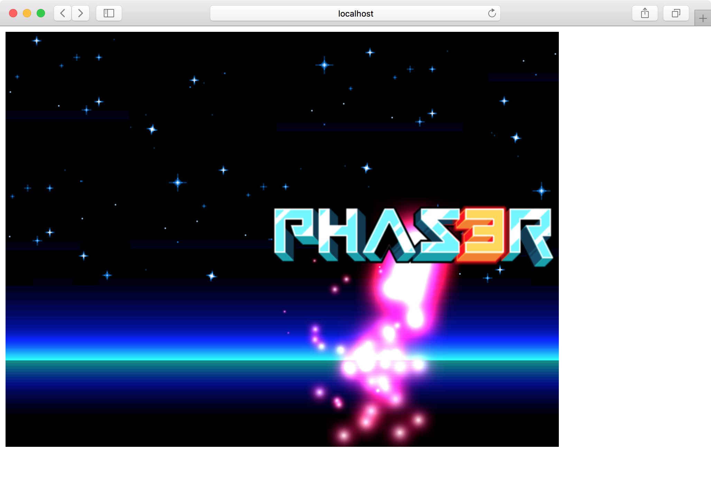
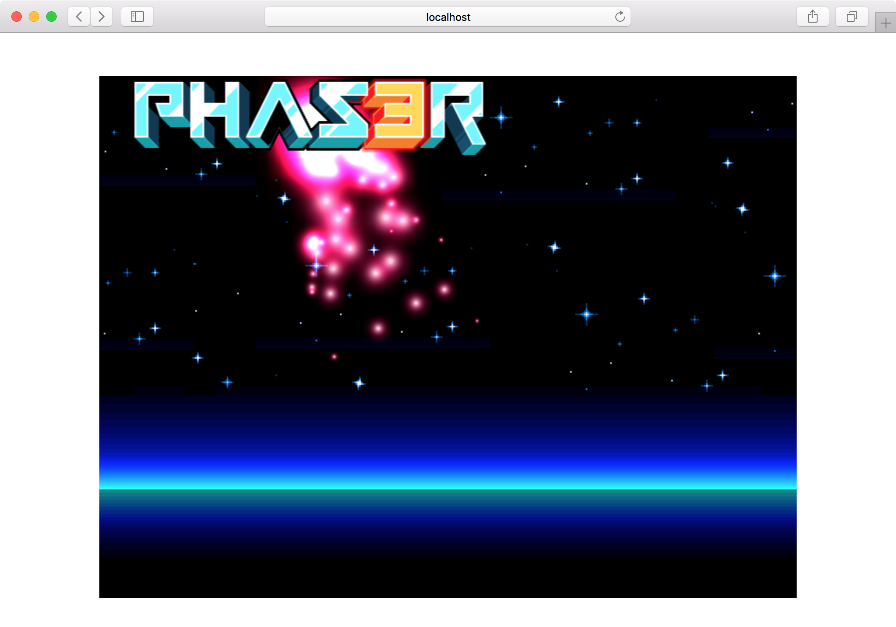
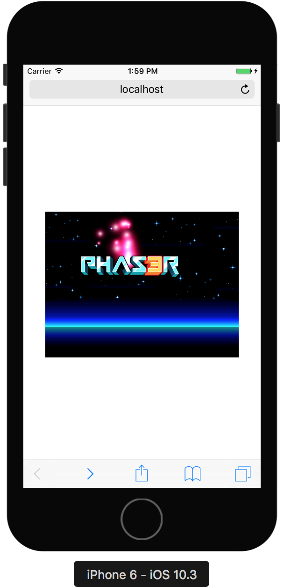
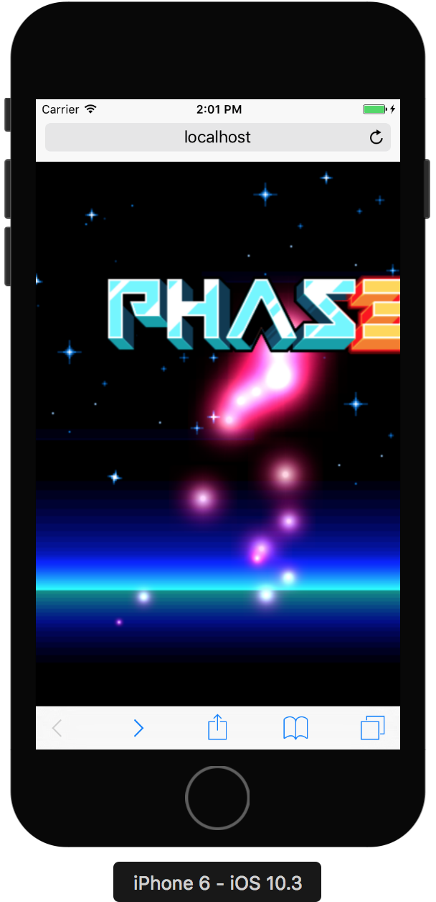
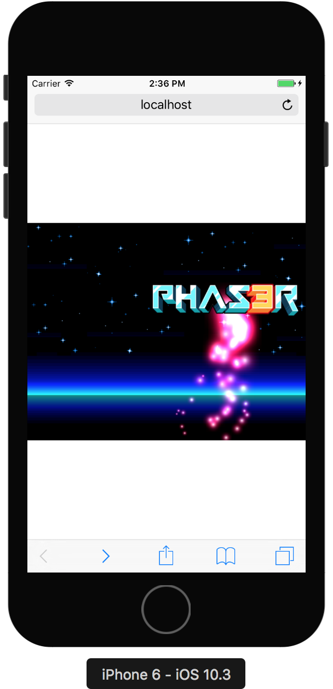
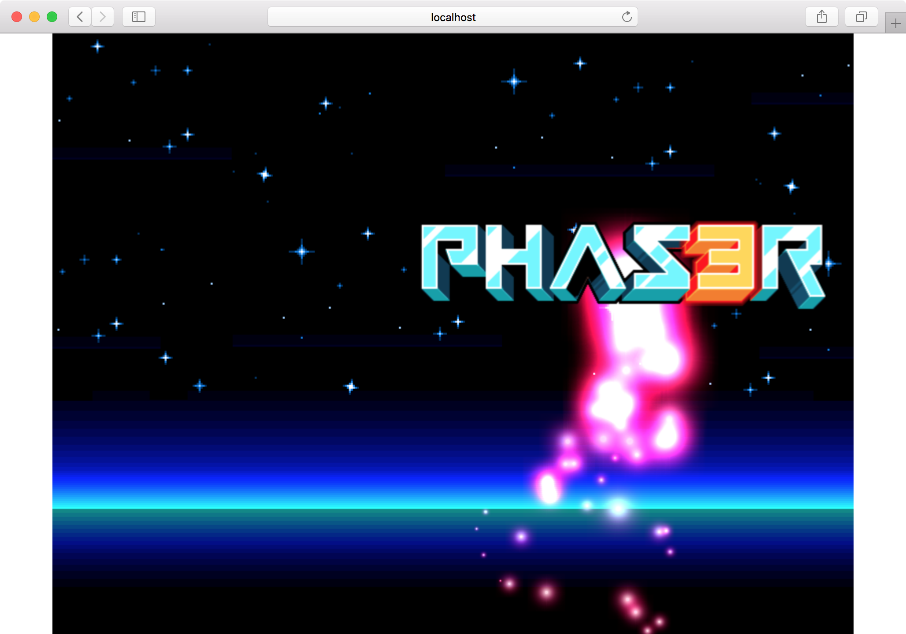

ゲームの中央表示・自動リサイズ
これまでのゲームは固定サイズで画面左上に表示していました。

サンプルならそれでも問題ありませんが、誰かに遊んでもらうために公開するようなゲームは、中央に表示したり、デバイスサイズに合わせたりしたいところです。
中央表示
まずは中央表示です。
PCしかサポートしないのであれば、適度なサイズを指定しておいて中央表示すれば十分でしょう。 HTML、CSSを少し変更するだけで実現できます。
pahser-centeringという名前でプロジェクトを作ります。
$ git clone git@github.com:tnantoka/hello-phaser-webpack.git phaser-centering
$ cd phaser-centering
$ yarn install
dist/index.htmlを修正して、style.cssを読み込みます。
<link rel="stylesheet" href="style.css">
dist/style.cssで中央表示になるようにスタイルを書きます。
書き方はいろいろありますが、ここではflexを使います。
html, body { height: 100%; } body { display: flex; align-items: center; justify-content: center; margin: 0; }
これで中央に表示されるようになりました。

自動リサイズ
ゲームフレームワークにはデバイスサイズに応じてゲームのサイズを変更できる機能があります。
たとえばiOSのSpriteKitであれば、scaleModeを指定するだけでOKです。
Phaserには今の所そのような機能はないようです。
といってもcanvas要素のサイズを変えれば自動でゲームのリサイズもされるようなので、windowのresizeイベントで処理すればOKです。
まずはdist/index.htmlでviewportの指定をして、拡大縮小も禁止します。
<meta name="viewport" content="width=device-width, user-scalable=no">
viewport指定前

viewport指定後

そしてdist/index.jsでリサイズの処理を書きます。
function onResize() { const { innerWidth, innerHeight } = window; const canvas = document.querySelector('canvas'); const canvasWidth = parseInt(canvas.style.width); const canvasHeight = parseInt(canvas.style.height); const widthRatio = innerWidth / canvasWidth; const heightRatio = innerHeight / canvasHeight; const minRatio = Math.min(widthRatio, heightRatio); canvas.style.width = canvasWidth * minRatio + 'px'; canvas.style.height = canvasHeight * minRatio + 'px'; } window.addEventListener('load', () => { onResize() }); window.addEventListener('resize', onResize);
canvasとwindowsの幅・高さの比率を計算し、小さい方に合わせてcanvasの幅・高さを変更しています。 これでモバイル・PCともにアスペクト比を保ったままで幅・高さのどちらかが画面いっぱいまで使われるようになりました。
モバイル

PC

今回のソースコードはこちらです。